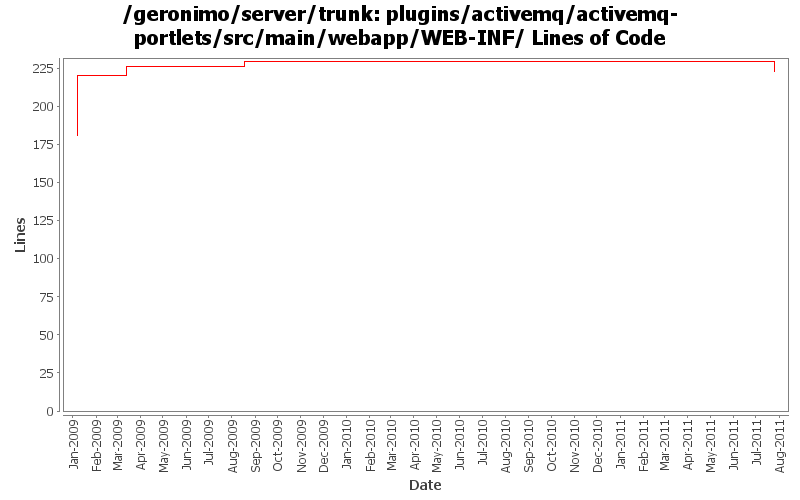

[root]/plugins/activemq/activemq-portlets/src/main/webapp/WEB-INF
 view
(0 files, 0 lines)
view
(0 files, 0 lines)
 jmsmanager
(9 files, 678 lines)
jmsmanager
(9 files, 678 lines)
 activemq
(5 files, 323 lines)
activemq
(5 files, 323 lines)
 server
(3 files, 187 lines)
server
(3 files, 187 lines)
 connector
(3 files, 232 lines)
connector
(3 files, 232 lines)
 jmswizard
(9 files, 1276 lines)
jmswizard
(9 files, 1276 lines)

| Author | Changes | Lines of Code | Lines per Change |
|---|---|---|---|
| Totals | 9 (100.0%) | 49 (100.0%) | 5.4 |
| dwoods | 3 (33.3%) | 39 (79.6%) | 13.0 |
| xuhaihong | 2 (22.2%) | 7 (14.3%) | 3.5 |
| gawor | 1 (11.1%) | 3 (6.1%) | 3.0 |
| rwonly | 1 (11.1%) | 0 (0.0%) | 0.0 |
| genspring | 2 (22.2%) | 0 (0.0%) | 0.0 |
GERONIMO-6094 Some issues of confirm msg tld in admin console
0 lines of code changed in 1 file:
GERONIMO-6007 Upgrade woodstox version to 4.1.1
1 lines of code changed in 1 file:
GERONIMO-5859 Reenable JMS related portlets, patch from Shenghao Fang
0 lines of code changed in 2 files:
Initial Japanese translation. Patch from Kan Ogawa (GERONIMO-4678)
3 lines of code changed in 1 file:
GERONIMO-4517 Apply unified message display style(G-4484) to javascript alert messages. Together with the localization of these messages. Thanks for the patch, Gang Yin
6 lines of code changed in 1 file:
GERONIMO-4484 Extraction, localization and display of messages generated in portlets. Applied common-message-openejb.patch, common-message-activemq.patch, common-message-debugviews.patch, common-message-plancreator.patch and common-message-sysdb.patch from Gang Yin. Also updated 2 console-testsuite DB tests to match modified message strings.
39 lines of code changed in 3 files: